The short version
People agree things in WhatsApp and then leave it to finish the job. A rate gets settled in a chat, and the quotation has to be sent from a different app. A flight gets booked, and the ticket arrives somewhere else. This project asks what changes if the email address lives right next to the chats.
The concept gives anyone an address ending in @whatsapp.com, claimed from a new Email tab. It is not tied to their phone number. From there a chat can turn into an email in one tap, chats and emails can sit in one searchable list, and verified business senders get a visible check mark.
I designed the screens, then wrote a short pitch deck (above) around three user stories: a B2B order, a trip, and a support complaint. Every name, address and number on the screens is fictional.
Email is the one place people still leave WhatsApp to get things done.
Two apps for one conversation
The pitch deck opens with three everyday frictions.
Chat here, email there
You agree something in WhatsApp. Then you open another app to send the file.
Where did it go?
The answer is in a chat, or in an email, so you search twice.
Is this email real?
Fake senders hide in crowded inboxes, and it is hard to tell who is who.
Two published figures put a size on the cost of switching. The Harvard Business Review reported in 2022 that the average worker switches between apps and websites about 1,200 times a day. Qatalog and the Cornell University Idea Lab found it takes about 9.5 minutes to refocus after a switch. Both are about work in general, not about email in WhatsApp, so I treat them as the size of the problem and not as a promise of savings.
Sources: Harvard Business Review, 2022 (via Axios). Qatalog and Cornell University Idea Lab (via Atlassian).
Email, living next to your chats
The first screen of the concept is the Email tab, added as a fifth tab after Communities. Someone picks an address ending in @whatsapp.com and it behaves like any other email address: they can write to and hear from anyone, on any provider. People cannot look them up by phone number, and they choose who gets the address.
For a business, the same tab idea grows into one list. Chats and emails sit together, with an envelope badge and an Email tag on the emails, and filters for unread messages, open tickets and priority. Phone and desktop share the idea. On desktop, Email sits in the left rail next to Chats, with the inbox and a reading pane side by side.
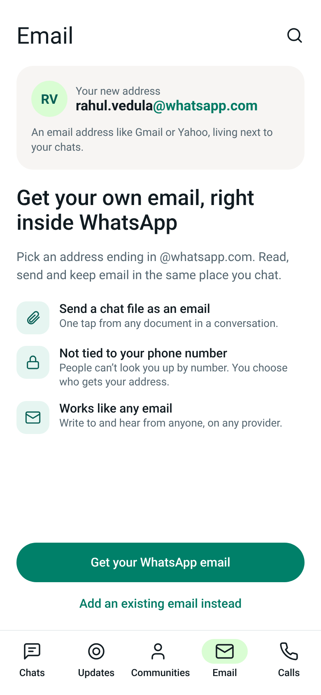
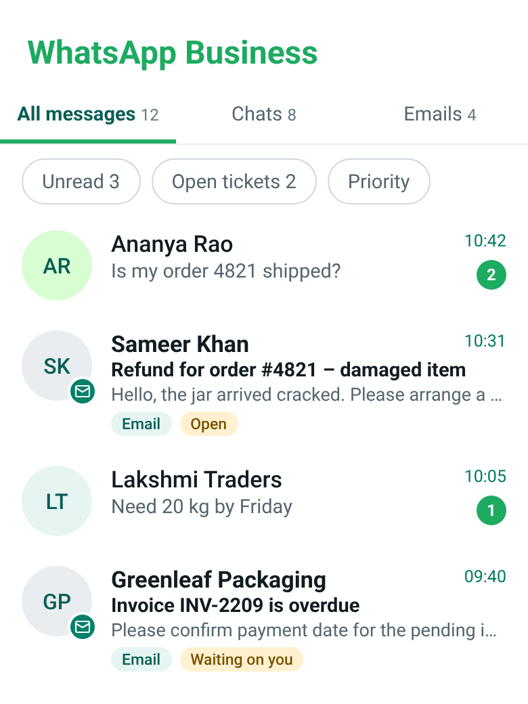
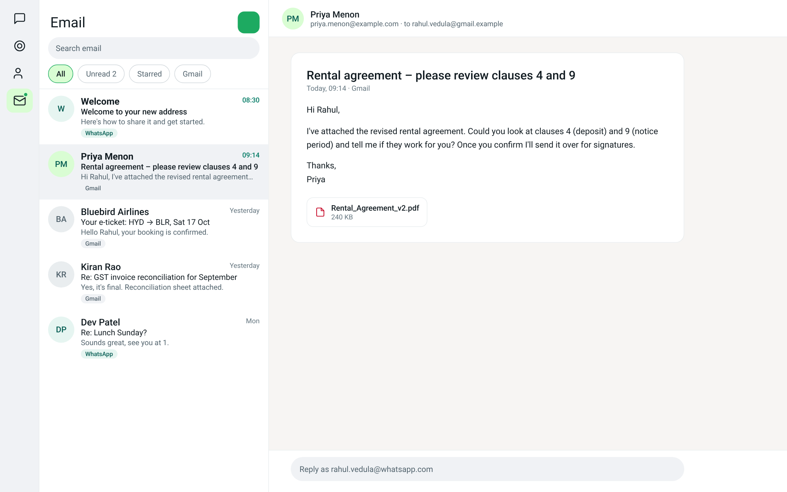
User stories that show the need for email
Each story is a moment where people leave WhatsApp today to finish the job. I followed each one from the first chat message to the last email.
A rate agreed in chat becomes a quotation
An oil trader and a restaurant buyer agree a rate in chat. WhatsApp offers to continue in email, and the quotation is drafted from the conversation with GST and the terms that were agreed. The buyer can approve it or forward it to their accountant. A purchase order and an invoice follow, and everything stays on one order thread with the chat.
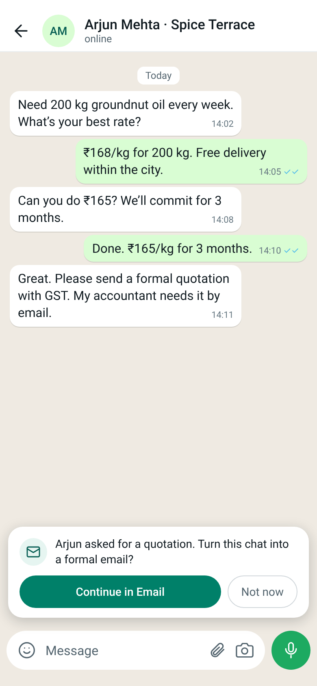
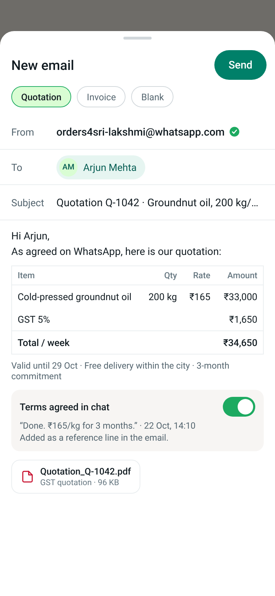
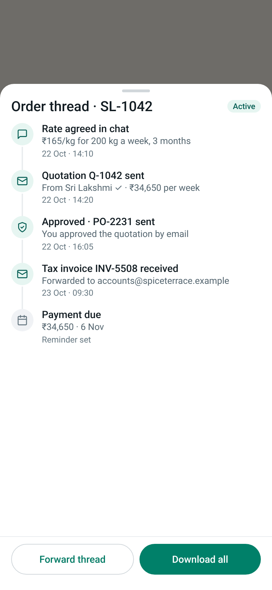
I flagged two assumptions on the canvas. The quotation template and the Approve button are business features. And whether Approve creates a legally binding purchase order is a product and legal question, not a design one.
A trip booked in chat arrives in the same chat
A traveller books a Goa trip with a verified travel agent. The tickets and hotel voucher arrive as an email card inside the same chat, and the full itinerary opens as one email. On the day of travel, an Email Assistant turns priority emails, a flight delay and a changed cab pickup, into chat messages that only the traveller can see.
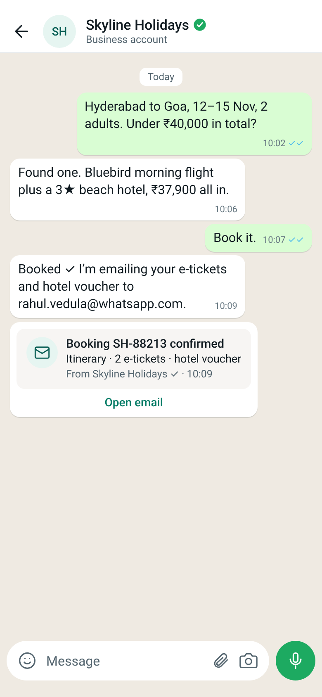
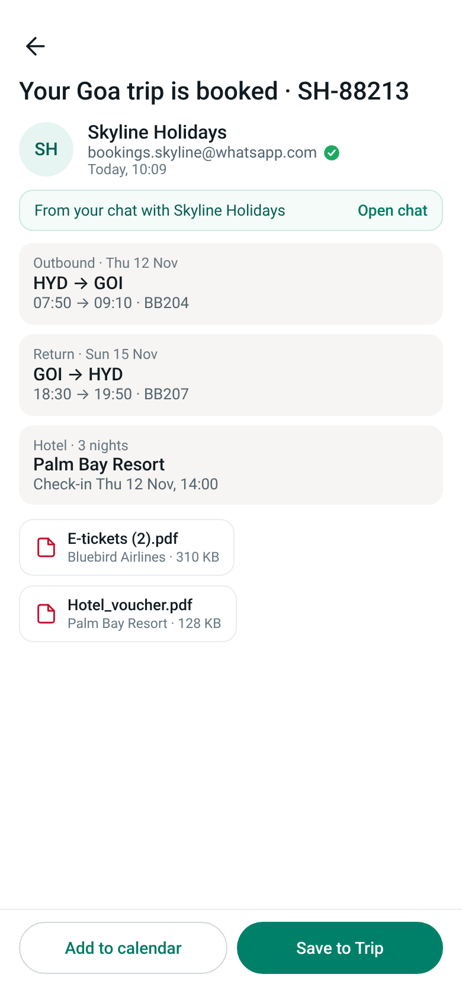
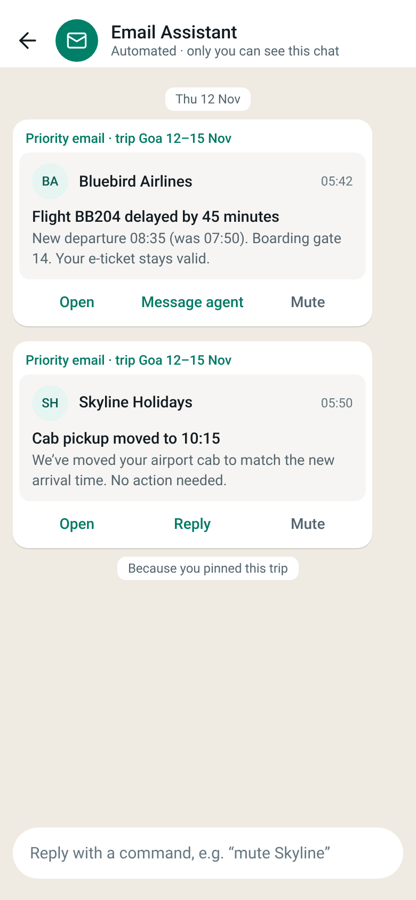
The trip card depends on structured data in the booking email, such as flights, hotel and dates. That needs senders to use a standard markup, which is a platform decision rather than something this design can assume.
A complaint in chat becomes a ticket you can track
A customer reports a cracked jar and sends photos. The agent turns the chat into a ticket email in one step, and the photos, the invoice and, if wanted, the chat transcript are pulled in automatically. The customer then sees a ticket with a clear status, received, under review, refund, and can reply in chat. They never have to explain the problem twice.
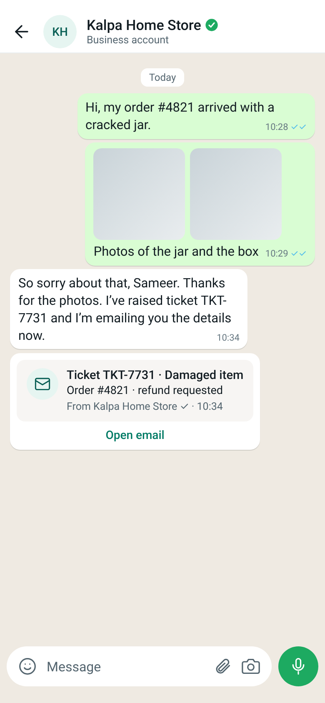
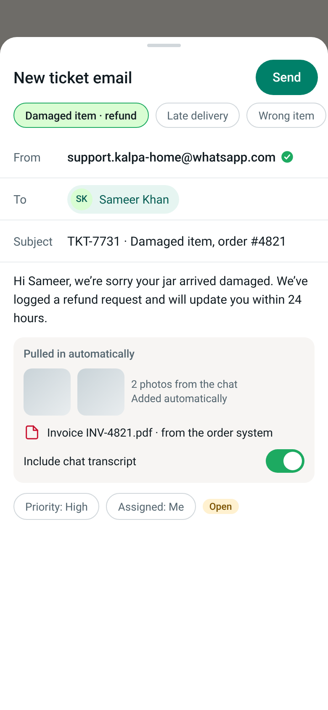
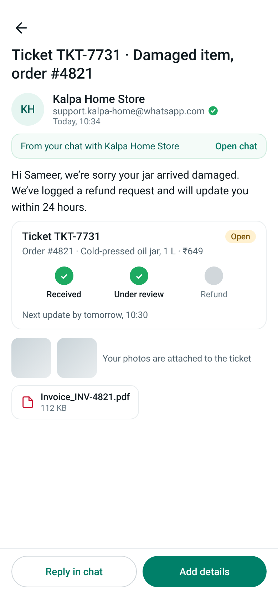
Invoices here come from the business's own order system. I left quick-commerce deliveries out on purpose, since a ten-minute order rarely needs email, and focused on e-commerce problems that do.
Trust and privacy, decided early
An email address that sits inside a chat app raises two questions straight away: who is this from, and who can find me.
- The address is not tied to a phone number. The design never looks an address up from a number.
- Verified @whatsapp.com business senders get a green check beside the address.
- Unverified senders get a clear warning.
- If a sender is in your contacts, their contact name replaces the raw address in the inbox.
The last point has a catch. Matching a sender to a contact by phone number would quietly link an address to a number, which conflicts with the privacy stance above. So the design matches only when the address is saved on the contact card, or when the sender has chosen to link it.
The part worth arguing about
This is a concept, and some of its hardest questions are not design questions. I kept them on the canvas as open items instead of drawing past them.
- Whether the Approve quotation button can create a legally binding purchase order.
- Whether trip cards can rely on senders adopting a standard markup.
- How contact matching works without linking an address to a phone number.
- The privacy note on search, which needs product and legal review.
The business numbers at the top of the page are the same: they size the opportunity and are not forecasts. I did not claim revenue or conversion numbers because I do not have credible ones. A pilot is how you would get them.
The ask in the pitch
The deck closes with a request for a conversation, not a commitment, and three small steps.
- Pilot. Start with WhatsApp Business: turn a chat into an email in one tap.
- Learn. See whether people keep coming back, and whether they trust verified senders.
- Grow. Open @whatsapp.com addresses to everyone who chats there.